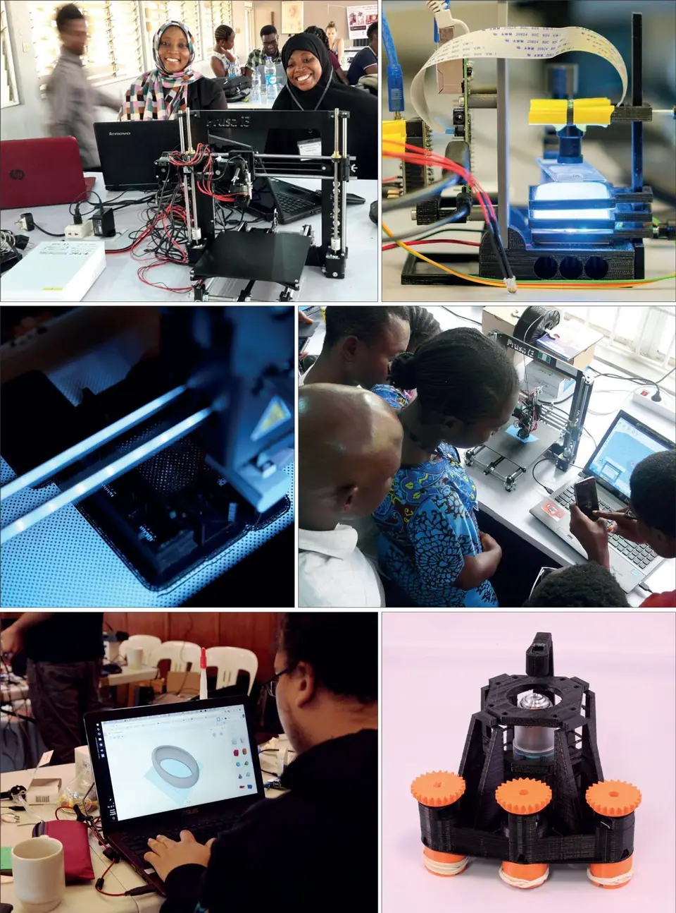
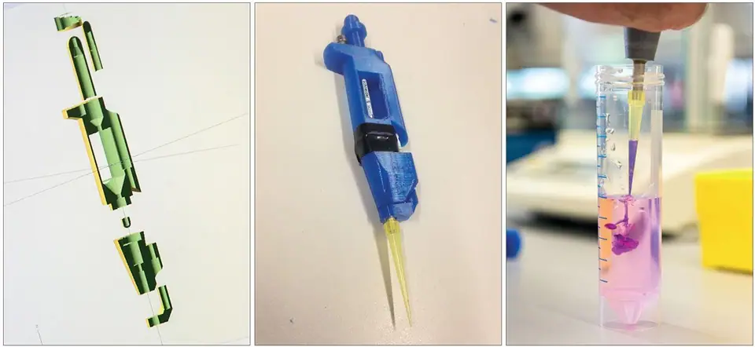
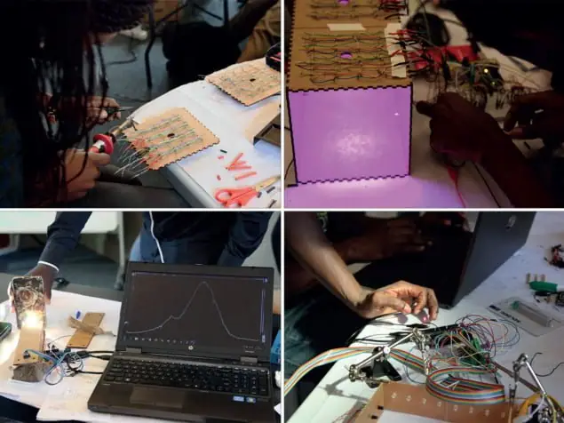
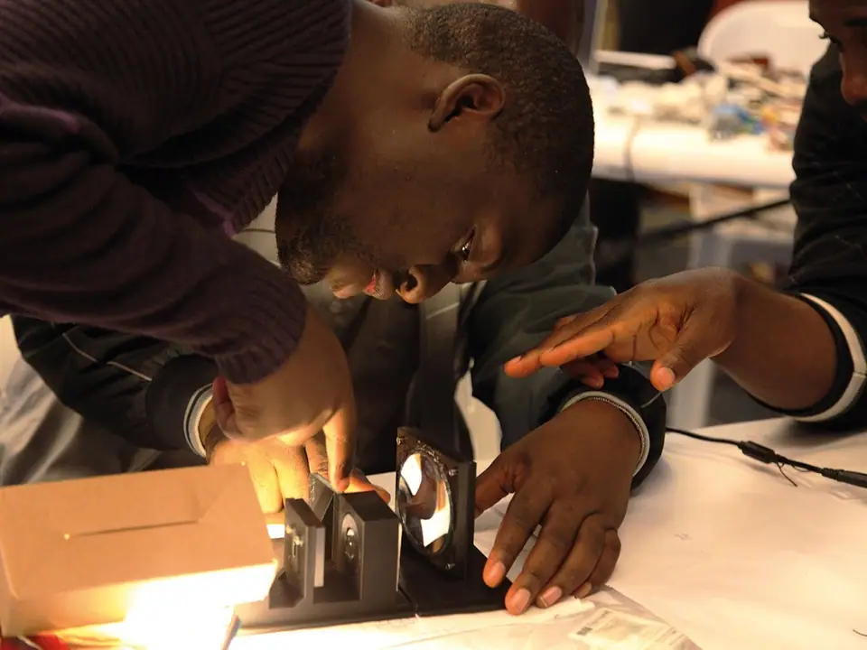

Articles ·
Open-science hardware in the developing world (Courtesy: TReND in Africa)
07 Aug 2018 Taken from the August 2018 issue of Physics World
In the developing world it’s difficult to get and maintain the hi-tech equipment we associate with modern laboratories. But could open-science hardware provide a lifeline? Rachel Brazilinvestigates
Walk into any modern physics laboratory and you’ll see all kinds of hi-tech instruments. There are spectrometers, microscopes, oscilloscopes and diffractometers all spitting out data, spectra and images. Apart from being expensive, the main problem with these “black-box” instruments is that they can’t be fully inspected or customized. If they break, you often have to pay engineers to come and fix them.
But what if you could make your own equipment? This is the principle behind the open-science hardware movement, which lets people make, modify and share hardware for scientific use. By sharing design blueprints and using 3D printers, equipment can be made quickly and cheaply. The idea has caught the imagination of many researchers, but for scientists in Africa and other parts of the developing world, open-science hardware is a lifeline that could benefit their teaching and research.

The trend for open-source hardware kicked off in the mid-2000s. It evolved from the “maker movement” in the US where DIY culture merged with hacker culture, in which members of the IT community collectively modified and developed code to improve software systems. At the core of the maker movement was the philosophy that making it easier for individuals to create things themselves could lead to a new era of micro-manufacturing and end the monopoly of mass-manufacturing. The device to enable this was the 3D printer, which was becoming cheap enough for the consumer market. People could start sharing designs thanks to online depositories such as Thingiverse, and could 3D-print them from plastic using the Lego polymer, acrylnitrile butadiene styrene (ABS), or biomass-derived polylactic acid (PLA).
The maker movement soon found its way to the sciences, but it wasn’t quite as simple as making other, non-scientific things according to Jenny Molloy, an early proponent of open science and a research fellow at the University of Cambridge, UK. “[General makers] didn’t tend to have to deal with the quality assurance, adherence to standards, calibration and reproducibility that is needed in science,” she says.
The open-source concept was not entirely new to science either. In the 1990s Linus Torvaldsat the University of Helsinki, Finland, designed the Linux operating system, which provided an underlying source code that could be used, modified and distributed by anyone. Now it’s widely used in servers, software and firmware, including Android smartphones, TiVo digital video recorders and satellite navigation systems for vehicles. Its success has often been attributed to its collaborative open-source development because it provides speedy problem solving.
A joy in sharing
So could a similar approach work for scientific hardware design? One of the first organizations to test this was CERN in Switzerland. “Most printed circuit boards designed at CERN are now made as open hardware,” says Molloy. “For them it a very pragmatic approach.” Since 2009 CERN’s open hardware repository (OHR) enables developers to avoid duplication and review work. They have also created their own open-hardware licence to provide a legal framework surrounding this technology exchange.
Another proponent of open-source hardware is Tom Baden, a neuroscientist at the University of Sussex in the UK, who became involved in 2012 after buying a 3D printer. He admits he did “not really have much of a plan” and started printing objects using designs downloaded from the Internet. Keen to design his own things, he took inspiration from a crude micropipette. “I thought maybe I can take the basic idea and design one that is a bit more precise,” Baden recalls.
Having done that, he then set up the website Open-Labware.net to test online reaction to his designs. It now offers numerous open-science hardware designs and modifications of existing equipment. Very popular designs, such as the pipette, can be downloaded around 30,000 times. “There is a joy in sharing,” Baden says.

As well as 3D printers, the other important development in the open-hardware community is the emergence in recent years of cheap, powerful electronics such as Arduinomicrocontrollers, Raspberry Pi computers and custom integrated circuits. Therefore, the designs available from online repositories can range from tiny accessories, like pipettes, to complex machines. “There are research scientists in physics who, on the side, build some really quite complicated machines, for example scanning laser microscopes,” says Baden. A popular design is a polymerase chain reaction (PCR) thermal cycler used by all molecular biology labs to amplify DNA. “It costs a few thousand dollars, but it’s basically just a heating and cooling device with a timer, so you can imagine it is fairly easy conceptually to build,” he adds.
Some devices, meanwhile, are being built primarily for educational purposes, rather than research. They include a Lego-based low-cost atomic force microscope (AFM), which was built in 2013 by an international student group as part of the Lego-sponsored LEGO2NANO event. The design now forms the basis of OpenAFM – a not-for-profit start-up to encourage other schools to build these devices.
Richard Bowman, an optics physicist at the University of Bath, UK, has likewise developed an open-source microscope called the OpenFlexure microscope that could be used in schools. The 3D-printed light microscope uses a modified web cam as the optics and includes a mechanical stage that allows sub-micron positioning of a sample and lens. Bowman’s design has been shared openly on the software development platform GitHub and can also be easily modified and customized.
“The idea of being able to share hardware in a similar way to how you share software really appealed to me,” he says. “The most basic version [of the OpenFlexure microscope], is definitely in the same ball park as a basic school microscope – it’s good for seeing single human cells.” But for Bowman there is a wider appeal. “I can flip a few switches in the design and get something that uses a proper objective lens and other optics, meaning that the images produced should be more or less equivalent to the sorts of microscopes that are being used in hospitals in the developing world.”
International community
Bowman’s desire to make something that could be used in developing nations is a common theme among members of the open-science hardware community. “Experimental science is really held back [in the developing world] by not being able to get hardware and, when they have hardware, not being able to service it and maintain it,” says Bowman. “So the hardware ends up sitting on a pedestal in the corner of the lab, not being used except to show off to visitors because actually it’s impossible for them to keep it working.” Open-science hardware could therefore help to bypass these problems.

In 2010 Baden founded a charity called TReND in Africa (Teaching and Research in Neuroscience for Development) with fellow neuroscientist Lucia Prieto-Godino, who is now at the Crick Institute in London. It supports neuroscience (and often other disciplines) in African universities by providing training in open-science hardware.
André Maia Chagas, who is a project leader for TReND in Africa, sees the task as one of developing local expertise and capabilities. “We show people that with very basic knowledge of electronics and 3D printing, they can build their own lab equipment, so we have been trying to show people that it’s something everyone can do,” says Maia Chagas. He does this by organizing local workshops, including a two-week event that was held at the University of Ibadan, Nigeria, in July 2017, and had 50 group applications from seven different countries. On the last day of the course, the delegates disassembled the 3D printers and each group took one home.
Bowman is also taking the DIY approach to Africa with his 3D-printed microscope. In 2015 he co-founded a not-for-profit company, WaterScope, which aims to provide low-cost methods for testing water quality in the developing world. As the microscope is 3D printed, it is cheap and can be printed by anyone so long as they have a 3D printer. WaterScope started off using the digital microscopes to detect bacteria in water but has now added a project working with Ifakara Health Institute in Tanzania to diagnose malaria.
The microscopes are used to detect the plasmodium parasites in blood samples. “The idea is to make it faster by automating some of the boring tasks so the technician can focus on the difficult bit, which is looking for the actual parasites,” explains Bowman. Rather than looking down an eye piece, the technician can look at a screen and that allows automation to be introduced. The microscope can also scan over the whole sample automatically. “The technician can then pan through it like Google Maps and look at the parasites,” says Bowman.
His group recently won a grant from the UK’s Engineering and Physical Sciences Research Council to develop a machine-learning approach to recognizing infected cells, leaving only a small unidentified group for the technician to check. “My ultimate dream is that you will find [our microscope] not just in hospitals but in relatively rural clinics,” says Bowman. “Our hope is that the hardware can be produced, maintained and serviced locally and that it can be cheap enough that even those sorts of places can have an automated microscope.”
Functional and feasible
But how easy or feasible is it for scientists in the developing world to take on these approaches? Ihab Riad, a physicist at the University of Khartoum in Sudan is one of a growing number of African scientists starting to build their own hardware.
After doing a PhD in South Africa, Riad returned to Sudan but found it impossible to continue his research. “It is not just my problem, it’s the problem of so many of my colleagues who did their PhDs everywhere in Europe,” he explains. “I couldn’t do anything with astronomy. For two or three years I was completely frustrated.” The situation in Sudan is particularly difficult due to continuing US and European sanctions and an embargo that makes it difficult to buy equipment, even when they have the resources.
Instead, he therefore began to focus his efforts on building and designing equipment for teaching the 300 physics undergraduates at the university. “So many physics departments depend on buying equipment from overseas, which is very expensive, so I am hoping that at least for undergraduates, I can produce [experimental] set-ups that can be available to other users,” says Riad. TReND in Africa provided Riad with a 3D printer and helped him obtain electronic components when needed. In fact, he has already built one of Baden’s microscopes for a colleague in biology and an ultrasonic signal generator for speed-of-sound experiments. To do this he also used Arduino open-source microcontroller kits and open-source CAD software.
I know how to fix the unit I built and replicate it – this is also very important
“I managed to keep the price 40% less than if I [had] bought the unit from China, let alone from Europe, so it makes a difference,” says Riad. “And I know how to fix the unit I built and replicate it – this is also very important.” He is now trying to build experiments for teaching mechanics and dynamics. “We have managed successfully to build an air track at a reasonable price and now I am building the electronics for a timer.”
The push for more of these types of DIY builds has been taken up by the Global Open Science Hardware (GOSH) community. It held its first “gathering” in 2016 at CERN, where the 60 attendees came up with a manifesto. A further meeting was held in Santiago, Chile, in March 2017, with 100 participants from academia, education and non-governmental organizations.

Do it yourself: At the end of the workshops, each group takes home a 3D printer. (Courtesy: TReND in Africa)
Global impact
According to Baden, open-science hardware is having most impact in Asia, pointing to the high numbers of hits from India on the online open-science depositories. Africa is also gaining ground. A sample of participants at the recent Africa Open Science and Hardware Summit, held in Kumasi, Ghana, in April, illustrates the range of DIY activities already going on: network engineer, Stanley Osajeh, from Nigeria is building cheaper DIY smart energy meters; Christonsia Mushi, a creativity trainer at the Twende Innovation Centre in Tanzania is using open-source hardware to develop confidence and skills in students; and Rea Nkhumise, an engineer at the Square Kilometre Array telescope in South Africa is building a DIY tape library for the immense amount of imaging data the telescope collects – he expects this will save the company at least $120,000.
There are still barriers, however, and one big challenge in Africa is developing confidence. “Simply showing people how easy it can be to establish some of these techniques in their labs can make a big difference,” says Baden. Riad agrees, “For one of the experiments that we have, the name of the ‘University of Khartoum’ is printed on the circuit board and whenever the students see it they get excited that this is something that was produced locally. It is also very educational for a student when you tell them that the things that they are using are not black boxes – we know how to do it and you can eventually know how to do it.”
But 3D printers are still sparse in Africa, and in some countries it’s not easy to find or process the plastic waste needed for 3D printing. That’s where organizations like the charity TechforTrade can help: it is trying to develop a 3D-printing infrastructure that includes waste pickers collecting the plastic waste required for recycling into 3D-printer filament.
Overall, open-science hardware is now a sizeable albeit niche activity, mainly driven by enthusiastic scientists in the developed world. It has allowed them to create bespoke equipment and conveniently print small accessories. Problems for these researchers are tied to finding the right way to license, document and reward designers. New journals, such as Hardware X, launched in 2016 are addressing these issues.
But in the developing world, and particularly Africa, open-science hardware could make a real difference to scientific progress. Although the number of scientific papers published by researchers in Africa has almost doubled over the last 20 years, they still account for less than 3% of all publications despite Africa making up 15% of the world’s population. According to participants of the recent Ghana meeting, for the open-science hardware movement to really flourish in Africa, it needs more support. “The case for developing and using open hardware has to be made at a governmental level,” says Molloy. And for that to happen, science and basic research itself must become more of a priority on the continent.
- Enjoy the rest of the August 2018 issue of Physics World in our digital magazine or via the Physics World app for any iOS or Android smartphone or tablet. Membership of the Institute of Physics required